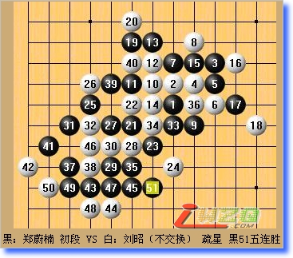

愉快的全锦赛
#1 愉快的全锦赛 作者：有志青年 发表时间：2007-12-4 17:07:17
下棋也有几年了，一直都在上海范围内游走，从没出去看看别人的实力。这是第一次参加全国性的大型比赛，说实在的，挺紧张的。对于对手也因十分地不了解，所以免不了紧张。
到了天津发现这次比赛竟然还有5岁和10岁的小孩子，唉，从没有过对手为小孩子的经验，更何况是认真学习过棋的孩子，因此担心被她们懂的谱骗死，祈祷着不要碰到她们。不想，首轮就碰上了5岁的mm——杨益萌。不过比赛的时候，看她一点也坐不住的样子，还不时念叨：“姐姐，快下呀。”，那可爱的样子反倒消除了我的紧张。稀里糊涂就被我骗掉一盘。随后对阵李琦——一个很爽朗、笑起来很甜的女孩子。一坐到对面就给我甜甜一笑，心情大好^ ^ 为了保守起见，我开了疏星。刚刚有点进入中盘的时候，她没看到我的做v，所以很快结束了比赛。
第二天的比赛无疑对我是比较重要的一天，因为对手都相对来说强了点。上午对张萌森，，赛前听说她很强，比赛时我也加倍地小心，我照样开出疏星。白棋20手可能稍显有些单薄，对黑棋在下方拓展的牵制不够。21手进攻的好点，同时也使得白棋的活二变的很尴尬，动也不好，不动也不好。她选择欠四，我很舒服的一子通三路，之后白棋就难防了。其实黑棋在27时就存在杀，不过我并没看到，而是选择了和上面的黑棋相连接然后再上下成杀的点。张早看到了我的杀，所以28手的唯一防很快就落子了。29手为了贯通左上和右下，34手的随意防让我松了一大口气。
下午对的是王珏，赛前小神一直跟我提到她，说挺强的。因此我惴惴不安地进赛场。因为弄错了比赛时间，王珏迟到了10分钟。赶到场后，她又坐了5分钟，然后很干脆地开出了松月，并给了我一打。行至11手，她防了我右边的眠三，这是我不太清楚的一个局面，13手由于我并不明确应该在哪块区域攻击所以在局部囤积优势，根据她的防守再作出攻击的选择。14手，一开始我认为这手可能弱了些，但后来算下去又觉得是挺坚实的一步，黑棋虽然在左边可以做出vcf，但被白棋在外围包围住后很难继续拓展也没把握取胜，所以我选择继续做棋，拓展空间。按照这个思路一直走到19，她好象没有信心继续单防我的棋了，走的比较激烈，交换几步意图通过黑棋的一个长连和她的两个活二牵制我的进攻，不过她漏算了黑棋的一套杀，如果20手单防15下面，感觉黑棋并不是怎么好处理了。
两天的连胜让我提高了信心，并有了冲第一的想法。因此，在第三天对刘昭的时候我又开出了这次比赛的幸运开局——疏星。虽然是个10岁的孩子，但给我的感觉是她的棋感或者说是计算力很好。后面的有些防守是唯一的，而她落子又快又准，我只能心中暗叹气。最后终于在一个小角落里杀了。

最后一轮对于亚君，我的幸运疏星没能再帮我。由于心态上有些放松，有些算不进棋，攻的太着急就收不住了，最后输了也着实有些可惜。当知道最后仅仅以微小的优势拿到冠军时真的十分后怕，后悔自己没有坚持到底，在以后一定要引以为戒。
这次比赛真的是运气相当好，但可惜更多高手没来参赛。通过那几天，我更清楚地了解自己还有很多地方要努力，也让我更喜欢五子棋这项活动。